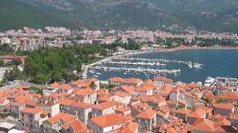
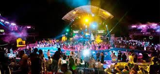
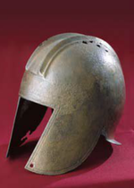

Budva je primorski grad na Jadranskom moru u Crnoj Gori. Grad ima oko 18.000 stanovnika i sedište je opštine Budva. Područje oko grada, duž obale, poznato je i kao Budvanska rivijera. Rivijera je centar crnogorskog turizma, i poznata po peščanim plažama, noćnom životu. Značajni turistički objekti se nalaze unutar mletačkih zidina iz 15. veka, koje okružuje budvanski Stari grad. Stari grad je bio teško oštećen u razornom zemljotresu 1979. godine, ali je potpuno obnovljen. U blizini Budve nalazi se turistički centar Bečići..
Utvrđeni grad na ovom prostoru je postojao još u doba antike. Istoričari veruju da je prvobitno bio ostrvo, koje se kasnije spojilo sa obalom i napravilo zemljouz. Mada su Grci osnovali mnoge kolonije u Mediteranu, po svemu sudeći, u delu obale Jadranskog mora, na području današnje Crne Gore, nisu uspeli u naseljavanju kolonista, iz razloga što im to nije dopuštalo domorodačko ilirsko stanovništvo. Umjesto toga, postojali su samo pojedini grčki tržišni centri - emporiji. Jedan od njih je, tokom VI. – V. vijeka prije nove ere, bio u Budvi (Butua). Prvi pomen ovog ilirskog grada nalazimo u V. veku pre nve ere, kod Sofokla, a Pseudo-Ksilaks navodi da se od njega do Drača putuje morem dan i noć, a kopnom tri dana. Zemlja ilirskog plemena Enhilejaca, na kojoj je osnovan grad Budva, pominje se još u mitovima vezanim za Kadmosa i Harmoniju, doseljenika iz grčke Tebe. Kadmosov sin je po mitu imao ime Ilirios: eponim starih Ilira. Po jednom fragmentu Filona, koji navodi Stefan Vizantinac, Kadmos je došao među Enhilejce u grad Budvu, na volovskim kolima, da bi im (po podatku Apolodora) pomogao u ratu protiv drugih plemena Ilira ("Illyri proprie dicti"). Nakon ilirsko-rimskih ratova, Budva potpada pod vlast Rima.
Ime Stari Grad, Budva je nosila u srednjem veku. Većina arhitekture Starog Grada je venecijanskog porekla. Vrata, prozori, balkoni i mnoge druge stvari su rimskog stila Venecijanske Republike. Postoje četiri osnovne crkve u Starom Gradu. Prva je Svetog Ivana, koja je sagrađena u 7. veku i sve do ukidanja Budvanske biskupije bila je katedrala, druga Bogorodičina crkva (Santa Maria in Punta) koja datira iz 840., treća, Svete Trojice, koja je sagrađena 1804. godine i četvrta Svetog Save Osvećenoga. Venecijanski zidovi Starog Grada su zanimljiva turistička atrakcija. Stari Grad je takođe poznat po zemljotresima koji su ga prilično oštetili 1979. godine. Pojedine kuće bile su potpuno srušene, a dio zidina napukao. Za kompletno saniranje kuća, ulica i bedema bilo je potrebno 8 godina (do 1987.).
  